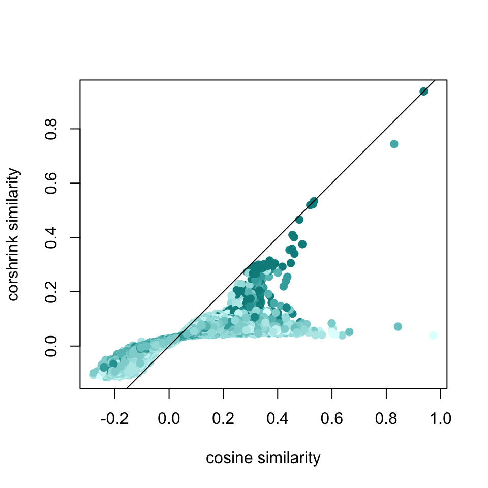

We look at CorShrink similarity measures and corresponding rankings of words and compare them with the empirical similarity and rankings without the CorShrink model. We pick four topic words to focus on - martin luther king, civil rights, vietnam and kennedy. These words corrspond to the most prominent events of the year - the Vietnam war, the end of the Civil rights movement and the assassination of Martin Luther King and Robert Kennedy.
mat <- get(load("../shared_output/word2vec_Ebony/martin_luther_king_corshrink.rda"))
cor_original <- mat$original
corshrink_mat <- mat$corshrinkword_frequencies_mat <- get(load("../shared_output/word2vec_Ebony/word_frequencies.rda"))
word_presence_absence <- word_frequencies_mat
word_presence_absence[word_presence_absence > 0] = 1matched_word_frequencies <- word_presence_absence[, match(rownames(corshrink_mat), colnames(word_presence_absence))]num_occurrences_words <- colSums(matched_word_frequencies)num_occurrence_matrix <- sapply(num_occurrences_words, function(l) pmin(l, num_occurrences_words))word_pairs <- combn(colnames(cor_original),2)df1 <- data.frame("original" = cor_original[lower.tri(cor_original)],
"corshrink" = corshrink_mat[lower.tri(corshrink_mat)],
"nsamp" = num_occurrence_matrix[lower.tri(num_occurrence_matrix)])
colfunc <- colorRampPalette(c("lightcyan", "darkcyan"))
plot(df1$original, df1$corshrink, bg = 2, col = colfunc(12)[df1$nsamp], pch = 19, cex = 1, xlab = "cosine similarity", ylab = "corshrink similarity", ylim = c(0,1))
abline(0,1)
ids <- which(df1$original > 0.8)
ids2 <- order(df1$original - df1$corshrink, decreasing = TRUE)[1:20]
terms <- paste0(word_pairs[1,ids], ":", word_pairs[2,ids])
terms2 <- paste0(word_pairs[1,ids2], ":", word_pairs[2,ids2])
text(df1$original[ids], df1$corshrink[ids], terms,cex = 0.5)df1 <- data.frame("original" = cor_original[lower.tri(cor_original)],
"corshrink" = corshrink_mat[lower.tri(corshrink_mat)],
"nsamp" = num_occurrence_matrix[lower.tri(num_occurrence_matrix)])
colfunc <- colorRampPalette(c("lightcyan", "darkcyan"))
plot(df1$original, df1$corshrink, bg = 2, col = colfunc(12)[df1$nsamp], pch = 19, cex = 1, xlab = "cosine similarity", ylab = "corshrink similarity")
abline(0,1)
ids2 <- order(df1$original - df1$corshrink, decreasing = TRUE)[1:20]
terms2 <- paste0(word_pairs[1,ids2], ":", word_pairs[2,ids2])
ids3 <- which(df1$original > 0.7 & df1$corshrink > 0.7)
terms3 <- paste0(word_pairs[1,ids3], ":", word_pairs[2,ids3])
text(df1$original[c(ids3, ids2[c(1, 2, 6, 8, 9, 13, 14, 18)])],
df1$corshrink[c(ids3, ids2[c(1, 2, 6, 8, 9, 13, 14, 18)])],
c(terms3, terms2[c(1, 2, 6, 8, 9, 13, 14, 18)]),
cex = 0.5)df1_sub <- data.frame("original" = apply(cor_original[c("martin", "luther", "king"),], 2, mean),
"corshrink" = apply(corshrink_mat[c("martin", "luther", "king"),], 2, mean),
"nsamp" = apply(num_occurrence_matrix[, c("martin", "luther", "king")], 1, mean))
colfunc <- colorRampPalette(c("lightcyan", "darkcyan"))
plot(df1_sub$original, df1_sub$corshrink, bg = 2, col = colfunc(12)[df1_sub$nsamp], pch = 19, cex = 1, xlab = "cosine similarity", ylab = "corshrink similarity")
abline(0,1)sort(apply(cor_original[c("martin", "luther", "king"),], 2, mean), decreasing = TRUE)[1:25]## luther martin king rev apostle
## 0.8908471 0.8535049 0.8485832 0.4063000 0.3981613
## floyd requested fiery assassinated murder
## 0.3509520 0.3498945 0.3463924 0.3427114 0.3375902
## francis funeral forres late kings
## 0.3301637 0.3293240 0.3269475 0.3180746 0.3070072
## joan prince caucuses abernathy preaching
## 0.3051331 0.3048364 0.2954050 0.2925116 0.2891073
## marched prophet kennedy assassination seeds
## 0.2868515 0.2835925 0.2812839 0.2809260 0.2785261sort(apply(corshrink_mat[c("martin", "luther", "king"),], 2, mean), decreasing = TRUE)[1:25]## luther martin king rev jackson
## 0.86047946 0.83742984 0.83344445 0.23006744 0.10901378
## leader assassination james kings ralph
## 0.09842106 0.09665314 0.09482433 0.09374696 0.09264236
## montgomery courtship late birmingham murder
## 0.09258621 0.09234065 0.09025221 0.09022915 0.08954815
## civil peace actively wright personal
## 0.08924835 0.08922241 0.08921495 0.08874579 0.08867831
## rights naacp god voice marched
## 0.08789465 0.08683455 0.08661692 0.08588993 0.08563276mat <- get(load("../shared_output/word2vec_Ebony/civil_rights_corshrink.rda"))
cor_original <- mat$original
corshrink_mat <- mat$corshrinkword_frequencies_mat <- get(load("../shared_output/word2vec_Ebony/word_frequencies.rda"))
word_presence_absence <- word_frequencies_mat
word_presence_absence[word_presence_absence > 0] = 1matched_word_frequencies <- word_presence_absence[, match(rownames(corshrink_mat), colnames(word_presence_absence))]num_occurrences_words <- colSums(matched_word_frequencies)num_occurrence_matrix <- sapply(num_occurrences_words, function(l) pmin(l, num_occurrences_words))word_pairs_2 <- combn(colnames(cor_original),2)df2 <- data.frame("original" = cor_original[lower.tri(cor_original)],
"corshrink" = corshrink_mat[lower.tri(corshrink_mat)],
"nsamp" = num_occurrence_matrix[lower.tri(num_occurrence_matrix)])
colfunc <- colorRampPalette(c("lightcyan", "darkcyan"))
plot(df2$original, df2$corshrink, bg = 2, col = colfunc(12)[df2$nsamp], pch = 19, cex = 1, xlab = "cosine similarity", ylab = "corshrink similarity")
abline(0,1)
ids <- which(df2$original > 0.8)
terms <- paste0(word_pairs_2[1,ids], ":", word_pairs_2[2,ids])
text(df2$original[ids], df2$corshrink[ids], terms,cex = 0.5)df2_sub <- data.frame("original" = apply(cor_original[c("civil", "rights"),], 2, mean),
"corshrink" = apply(corshrink_mat[c("civil", "rights"),], 2, mean),
"nsamp" = apply(num_occurrence_matrix[, c("civil", "rights")], 1, mean))
colfunc <- colorRampPalette(c("lightcyan", "darkcyan"))
plot(df2_sub$original, df2_sub$corshrink, bg = 2, col = colfunc(12)[df2_sub$nsamp], pch = 19, cex = 1, xlab = "cosine similarity", ylab = "corshrink similarity")
abline(0,1)sort(apply(cor_original[c("civil", "rights"),], 2, mean), decreasing = TRUE)[1:25]## civil rights movement legislation
## 0.9007841 0.9007841 0.4405455 0.3730043
## disorders bills enforcement movements
## 0.3550964 0.3421801 0.3402390 0.3323286
## strengthened involvement equal protection
## 0.3269478 0.3155524 0.3120888 0.3120654
## reconstruction belonged cowboys andrew
## 0.3117899 0.3022773 0.2964739 0.2961406
## randolph amendments murders commission
## 0.2911620 0.2899793 0.2860052 0.2846442
## nonviolent recommendations brutal sncc
## 0.2844914 0.2823338 0.2760409 0.2733980
## paradox
## 0.2722072sort(apply(corshrink_mat[c("civil", "rights"),], 2, mean), decreasing = TRUE)[1:25]## civil rights movement equal militant
## 0.90078411 0.90078411 0.28434679 0.11712699 0.11265973
## commission war freedom committee involvement
## 0.11157274 0.10768549 0.10677891 0.10644511 0.10586616
## luther equality principles became human
## 0.10202443 0.10028706 0.09897363 0.09890537 0.09883332
## complications georgia constitution nonviolence legislation
## 0.09716990 0.09696635 0.09610843 0.09607732 0.09593372
## voting workers integration political law
## 0.09576468 0.09572006 0.09560082 0.09551930 0.09485102mat <- get(load("../shared_output/word2vec_Ebony/vietnam_corshrink.rda"))
cor_original <- mat$original
corshrink_mat <- mat$corshrinkword_frequencies_mat <- get(load("../shared_output/word2vec_Ebony/word_frequencies.rda"))
word_presence_absence <- word_frequencies_mat
word_presence_absence[word_presence_absence > 0] = 1matched_word_frequencies <- word_presence_absence[, match(rownames(corshrink_mat), colnames(word_presence_absence))]num_occurrences_words <- colSums(matched_word_frequencies)num_occurrence_matrix <- sapply(num_occurrences_words, function(l) pmin(l, num_occurrences_words))df3 <- data.frame("original" = cor_original[lower.tri(cor_original)],
"corshrink" = corshrink_mat[lower.tri(corshrink_mat)],
"nsamp" = num_occurrence_matrix[lower.tri(num_occurrence_matrix)])
colfunc <- colorRampPalette(c("lightcyan", "darkcyan"))
plot(df3$original, df3$corshrink, bg = 2, col = colfunc(12)[df3$nsamp], pch = 19, cex = 1, xlab = "cosine similarity", ylab = "corshrink similarity")
abline(0,1)
df3_sub <- data.frame("original" = cor_original[c("vietnam"),],
"corshrink" = corshrink_mat[c("vietnam"),],
"nsamp" = num_occurrence_matrix[,"vietnam"])
colfunc <- colorRampPalette(c("lightcyan", "darkcyan"))
plot(df3_sub$original, df3_sub$corshrink, bg = 2, col = colfunc(12)[df3_sub$nsamp], pch = 19, cex = 1, xlab = "cosine similarity", ylab = "corshrink similarity")
abline(0,1)sort(cor_original["vietnam",], decreasing = TRUE)[1:25]## vietnam war brigade wounded combat
## 1.0000000 0.4434992 0.3520040 0.3512938 0.3497281
## duty tour ietnam correspondent pentagon
## 0.3477188 0.3398961 0.3342478 0.3299423 0.3263955
## veteran returning korea jungles infantry
## 0.3260021 0.3236263 0.3201537 0.3186872 0.3175398
## veterans vets submarine dying here
## 0.3098152 0.3062246 0.3040134 0.3023057 0.2873125
## battalion soldiers serving mentally stay
## 0.2867404 0.2843436 0.2791144 0.2781036 0.2767653sort(corshrink_mat["vietnam",], decreasing = TRUE)[1:25]## vietnam war duty korea tour south
## 1.00000000 0.35414001 0.21529770 0.17161943 0.16133289 0.15118126
## serving returning soldiers here troops disgusted
## 0.12550588 0.12432420 0.11590789 0.11558507 0.10679646 0.10576261
## veterans army hospital chest men after
## 0.10492706 0.10467981 0.10449188 0.10329116 0.10293328 0.10273593
## keep civilian wounded fort tonys eight
## 0.10258061 0.10140185 0.09982647 0.09898947 0.09858139 0.09825677
## vietnamese
## 0.09749280This R Markdown site was created with workflowr